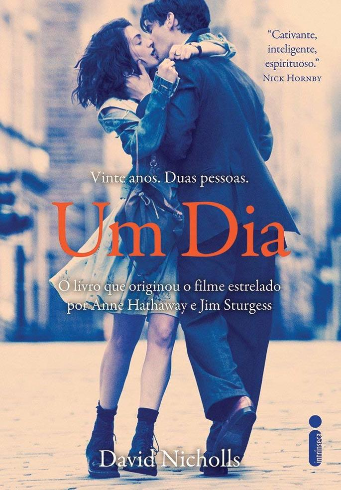
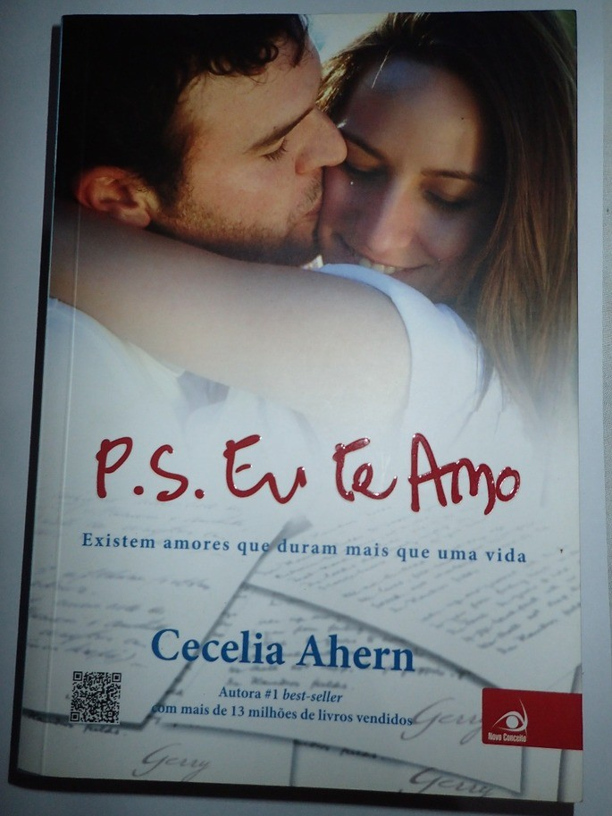

| Se você adora ler livros de romance, já deve ter se perguntado: qual o melhor livro de romance para esse momento? Veja a seguir 3 indicações de livros que são um sucesso! | |
|---|---|
|  |
um diaDavid NichollsSinopse: Dexter Mayhew e Emma Morley se conheceram em 15 de julho de 1988. Depois de apenas um dia juntos, não conseguem parar de pensar um no outro. Ao longo dos vinte anos seguintes, flashes do relacionamento deles são narrados, um por ano, todos no mesmo dia: 15 de julho. Dexter e Emma enfrentam disputas e brigas, esperanças e oportunidades perdidas, risos e lágrimas. E, conforme o verdadeiro significado desse dia crucial é desvendado, eles precisam acertar contas com a essência do amor e da própria vida. Saiba mais |
como eu era antes de vocêJojo MoyesSinopse: Lou Clark é uma pessoa cheia de esperança e positividade. Ela leva uma vida simples, ajudando a família com as despesas e tem um namorado de longa data. Quando perde o emprego como garçonete, recebe uma proposta de se tornar a cuidadora de Will Traynor, um charmoso ex-banqueiro que está paralisado desde que sofreu um acidente de moto há dois anos. O amor que nasce entre os dois é transformador para Lou e lhe dá um novo olhar sobre a vida. Saiba mais |
|
|  |
p.s eu te amoCecelia AhernSinopse Lidar com a perda pode ser algo devastador. Ainda mais quando essa perda é do grande amor da sua vida. No caso de Holly, o namorado Gerry resolveu ajudá-la a superar a sua ausência, deixando várias cartas para guiá-la até uma vida feliz, mesmo ele estando morto. Esse sensível romance deixa qualquer um emocionado. Saiba mais |